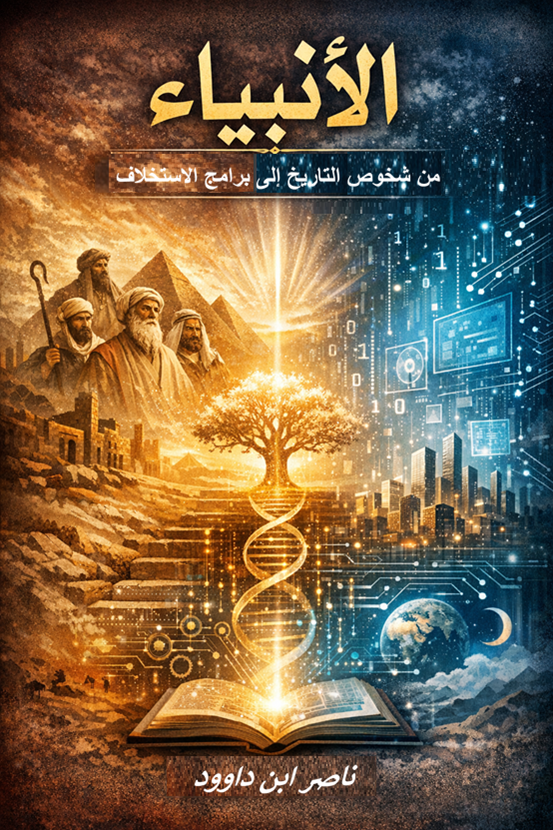

📥 روابط التحميل المباشر
📄 DOCX 📖 PDF (مباشر) 📖 PDF (خارجي) 🌐 HTML 📝 نص خام (خارجي) 📝 نص خام (مباشر) 🌐 Archive.orgوصف الكتاب
هذا الكتاب يمثل دمجًا متماسكًا بين مسودات زمنية مختلفة، حيث يجمع بين النهج الوظيفي اللساني والرؤية البرمجية الوظيفية. الغرض هو تقديم قراءة متكاملة تحول أسماء الأنبياء من شخصيات تاريخية إلى "برامج تشغيلية" ونماذج وظيفية للاستخلاف الإنساني.
الكتاب ليس تفسيرًا تقليديًا لأسماء الأنبياء في القرآن، ولا يسعى لمزاحمة كتب التفسير المعتبرة أو استعراض القصص التاريخية. إنما يندرج ضمن حقل "التأويل القرآني الوظيفي"، الذي يتعامل مع النص المقدس بوصفه خطابًا حيًا يهدف لبناء الوعي الإنساني وتفعيل طاقاته، لا مجرد سجل للأحداث والشخصيات التي انقضت.
المسلّمة المركزية
الاسم في اللسان القرآني ليس علامة تعريفية محايدة، بل هو "بنية دلالية مقصودة" و"شيفرة وظيفية" (Functional Code) صُممت بدقة لتؤدي دورًا محوريًا في نظام الاستخلاف الإنساني. نحن نتجاوز السؤال التقليدي: "مَن كان النبي؟" و"أين عاش؟"، لنطرح سؤالًا أكثر حيوية: "كيف يعمل نموذج هذا النبي كبرنامج وظيفي في واقعنا اليوم؟".
ركائز المنهجية: التدبر البنيوي
- المحور اللساني (نظام المثاني): تشريح حروف الاسم واستخراج الطاقات الحرفية الكامنة فيه
- المحور الوظيفي (المنطق السنني): ربط المعنى اللغوي بوظيفة كونية أو بشرية
- المحور الوجداني (النبي فينا): تفعيل هذه "الاسم/الوظيفة" في الحياة اليومية للارتقاء من مرتبة "البشر البيولوجي" إلى مقام "الإنسان الخليفة"
أهداف المنهج
- الاستدعاء: يمكنك "استدعاء" وظيفة (الصبر الأيوبي) في لحظة مرضك
- التحديث: فهم كيف تتطور الرسالات من "برنامج محلي" إلى "برنامج عالمي مهيمن"
- التطبيق: تحويل القراءة من "استمتاع بالقصص" إلى "تفعيل للأدوات" في واقعنا المعاصر
- تفعيل البرامج: إعادة اكتشاف الإنسان على ضوء النماذج النبوية
فهرس المحتويات
الرؤية المركزية
الكتاب محاولة لإعادة قراءة "البيانات" المخزنة في أسماء الأنبياء، لنعرف كيف نشغل هذه البرامج في أنفسنا، لنستحق لقب "خليفة". نحن هنا لا نقرأ "سِيراً ذاتية"، بل نقرأ "أكواداً تشغيلية" أودعها الخالق في نظام الوجود الإنساني.
ندعو القارئ في هذه الرحلة لاكتشاف "ناموس الأسماء"؛ حيث يتحول القرآن من كتاب نصوص إلى "نظام تشغيل" (Operating System) متكامل، يمنحنا الأدوات والبرامج اللازمة لإدارة حياتنا وفقاً للمنظور الإلهي.
لمن هذا الكتاب؟
- الباحثون في الدراسات القرآنية: المهتمون بالتأويل الوظيفي والمنهجيات الحديثة
- المهتمون باللسانيات القرآنية: الراغبون في فهم نظام المثاني والبناء اللغوي
- المفكرون والمهتمون بالاستخلاف: الباحثون عن رؤية معاصرة للاستخلاف الإنساني
- القارئ المتدبر: الراغب في تفعيل النماذج النبوية في حياته اليومية
- المهتمون بالتقاطع بين الدين والعلوم: الباحثون عن لغة حوارية معاصرة